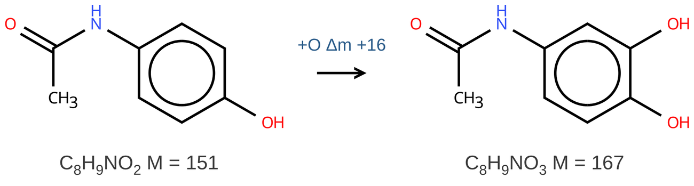

Disegnare le molecole
Come usare l'editor chimico della scheda Disegno (Ketcher) per molecole, ioni, frammenti e vie di trasformazione. Sotto ogni struttura compaiono da soli formula e massa: la scheda calcola, voi decidete cosa disegnare.

Comandi e consigli
Atomi
scegli l'elemento nella barra a destra (o il tasto: C, N, O, S, L = Cl, B = Br) e fai clic su un atomo per sostituirlo, o su un punto vuoto per aggiungerlo.
Carica + o −
strumenti A+ e A− nella barra a sinistra (tasti = e -), poi clic sull'atomo. Ogni clic aggiunge una carica. Per uno ione [M+H]+ metti la carica sull'atomo protonato (di solito N od O) e aggiungi l'H: la formula diventa quella dello ione e la scritta mostra m/z.
Aggiungere un atomo (es. +O)
per una struttura vera, scegli O e fai clic su un atomo della molecola (si crea il legame). Per una semplice scritta accanto a una freccia («+O», «−CH2», «+H2O») usa lo strumento testo T (Alt+T); nel riquadro del testo ci sono i pulsanti pedice e apice.
Parentesi
Ketcher non ha parentesi semplici per gli ioni (gli S-Group mettono parentesi da polimero, con una «n»). Per uno ione la cosa corretta è mettere la carica sull'atomo con A+: la scritta sotto diventa m/z. Se vuoi proprio la notazione [ ]+, scrivila con lo strumento testo T (pulsante apice per il +).
Vie di trasformazione
freccia di reazione e segno + nella barra a sinistra; testo sopra la freccia con T. Se disegni composto di partenza → freccia → prodotto sulla stessa riga, sopra la freccia compare da sola la differenza (es. «+O Δm +16»).
Un frammento senza rompere legami
seleziona solo gli atomi del pezzo (rettangolo di selezione, oppure clic sugli atomi tenendo premuto Maiusc): a destra, nel riquadro «Selezione», compaiono la sua formula e gli m/z possibili dello ione. Anche Alt+C di Ketcher dà formula e massa della parte selezionata.
Rompere un legame (frammenti)
strumento gomma (Del) e clic sul legame: la molecola si divide e sotto ogni pezzo compaiono formula e massa. Attenzione: un frammento in MS/MS è uno ione, quasi sempre con un H spostato; aggiungi carica e H dove servono e confronta l'm/z con lo spettro di ioni prodotto. Se sbagli: Ctrl+Z.
Altro
Ctrl+A seleziona tutto, Ctrl+L riordina il disegno, Ctrl+rotella ingrandisce.
Le due spunte in cima alla barra a destra scelgono cosa scrivere sotto ogni struttura: la formula bruta, la massa monoisotopica (M per una specie neutra, m/z se c'è una carica) o tutte e due. Per la massa si sceglie il numero di decimali (0 = all'unità, come nello spettro a risoluzione unitaria). La scritta compare anche nelle immagini esportate.